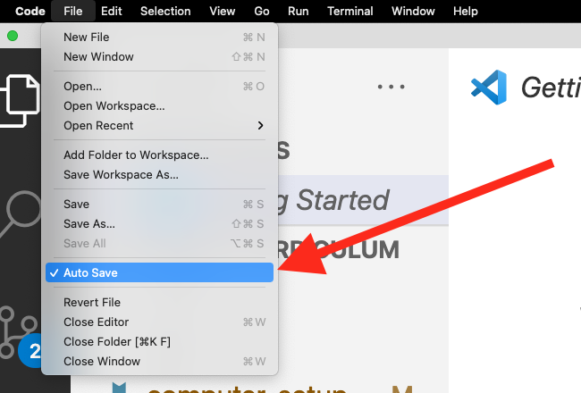

Windows Computer Setup Guide
Webex
Windows Side
If you haven't already, Download Webex Meetings
WSL 2
You must install WSL2 in order to complete this course.
https://docs.microsoft.com/en-us/windows/wsl/install-win10
NOTE: Be sure to remember the password you set for your ubuntu user. You'll need this often.
From PowerShell, run
wsl --list --verbose
Returns the Name of the Linux you installed, thr running state, the WSL version as 2 and the * marking default:
NAME STATE VERSION
* Ubuntu-18.04 Running 2
If you see something else, may need to set wsl defaults . In this case, to set the particular distro as default, use wsl --set-default Ubuntu-18.04.
Ubuntu Updates
Ubuntu Side
From the WSL Terminal, run the following:
sudo apt-get update -y
sudo apt-get install build-essential zsh -y
Close and open your Terminal.
- Open a new Terminal window (or tab)
- Run the following command:
echo $SHELL
You have ZSH if you see the following output: /bin/zsh
(Optional) oh-my-zsh
Ubuntu Side
- Go to https://ohmyz.sh/
- Follow instructions
At the time of this writing, the command was:
bash -c "$(curl -fsSL https://raw.github.com/ohmyzsh/ohmyzsh/master/tools/install.sh)"
See also https://blog.joaograssi.com/windows-subsystem-for-linux-with-oh-my-zsh-conemu/
Homebrew
Ubuntu Side
Install Homebrew
- Visit https://brew.sh/
- Click the "Copy" link and run the command. At the time of this writing, it's:
/bin/bash -c "$(curl -fsSL https://raw.githubusercontent.com/Homebrew/install/HEAD/install.sh)"
Add Homebrew to Path
Add homebrew to your path in ~/.zshrc
echo "export PATH=\"/home/linuxbrew/.linuxbrew/bin:/home/linuxbrew/.linuxbrew/sbin:\$PATH\"" >> ~/.zshrc
source ~/.zshrc
Install common packages
brew install gcc git
Configure Git
Ubuntu Side
brew install git
git config --global core.ignorecase false
Set your name
git config --global --list
If you don't see your name and email, then run these commands:
git config --global user.name "<your actual name>"
git config --global user.email "<your actual email>"
Install Helm
Ubuntu Side
brew install helm
NodeJS with NVM
Ubuntu Side
- Visit https://github.com/nvm-sh/nvm
- Follow the instructions
At the time this article was written, the command is:
curl -o- https://raw.githubusercontent.com/nvm-sh/nvm/v0.38.0/install.sh | zsh
source ~/.zshrc
nvm install node
nvm alias default node
Install Visual Studio Code
Windows Side
Install Visual Studio Code following these instructions:
https://code.visualstudio.com/docs/remote/wsl
Configure Visual Studio Code
Ubuntu Side
Install the Live Share extension:
code --install-extension ms-vsliveshare.vsliveshare

Install the YAML extension.
code --install-extension redhat.vscode-yaml
Docker Desktop
Follow instructions here to install Docker Desktop and configure for WSL2.
https://docs.docker.com/docker-for-windows/wsl/
(Optional) Slack App
It's helpful to have the Slack App.
IBM Cloud CLI
Click the link below and follow the instructions: